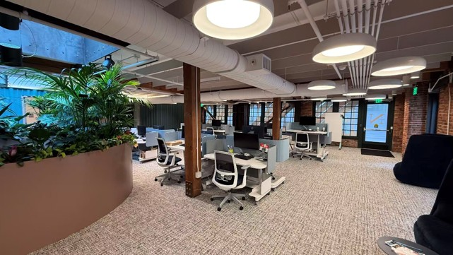
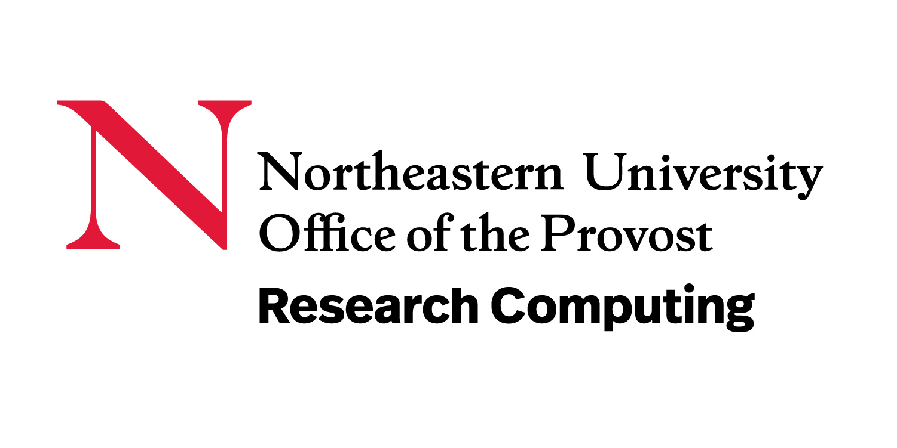

Spatioform Lab
Spatioform (Spatial + Form): We explore the 3D physical world by integrating machine learning with physical reasoning. Our research focuses on advancing scene understanding, content generation, and intelligent reasoning to develop scalable algorithms that bridge fundamental research and transformative applications across computer vision, machine learning, and robotics.

Research Areas
Scene Understanding — Developing physics-informed methods to infer scene geometry, illumination, and material properties from sparse visual observations. Our work spans single-image editing, image-based relighting, and 3D scene synthesis.
Multimodal ML — Advancing ML models that integrate natural language with visual perception to enable content generation and semantic reasoning across modalities. Focus areas include vision-language models, multimodal representation, and generative AI.
Agentic AI — Developing AI agents that enable complex physical reasoning, adaptive action planning, and robust task execution. Research focuses on multi-agent coordination, zero-shot generalization, iterative learning mechanisms, and automation.
Group Members
Master Thesis
- Xiaopan Chu — Computer Vision, ML
- Qianyi Li — Multimodal AI
- Lasya Priya Patkam — LLM, Robot Learning
Master Project
- Jingtian Zhu — Virtual Agents, Embodied AI
- Zhifei Ye — Agentic AI, Computer Vision
Graduate Research
- Shuran Zhao — Multimodal AI, Computer Vision
- Tian Wang — Multimodal AI, LLM
- Jiayan Wang — LLM, Robot Learning
Former Members
Master Project
- Yijie Chen — Beyond 2D: Creating 3D Augmented Reality from a Single RGB Image (Jan-Apr 2026)
Graduate Research
- Bowen Shi — Image-Based Scene Understanding (Mar-Oct 2026)
Acknowledgements
